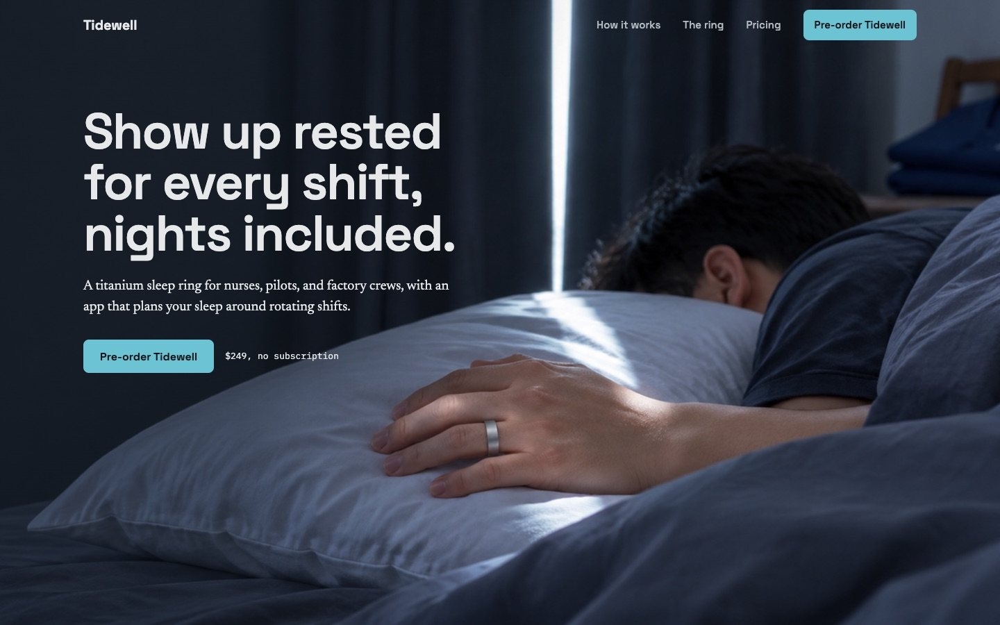
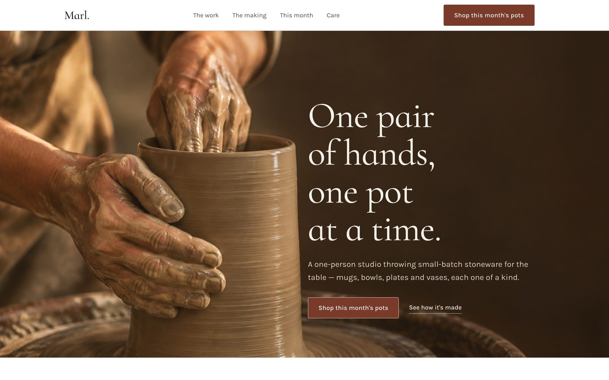
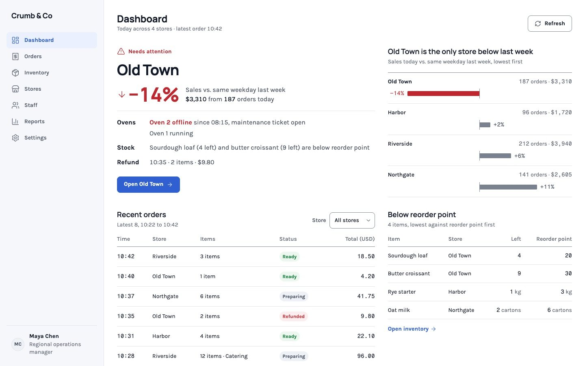

Give your agenttaste.
An open rulebook that Claude Code, Codex, Cursor and other coding agents read before they build an interface.
npx skills add yarzc0de/YourDesignRules- 265 rules
- 17 visual directions
- Free to use
- Read them on GitHub
Ask a model for a landing page and you get the same one every time.
Cards inside cardsThree equal boxes under the heroA cream backgroundA gradient blobA testimonial nobody wrote
And nobody ever looks at the render. These rules make your agent look.
Same prompt. Same model.
One app screen, built twice from one brief. Flip the switch to load the rules.


Sunshift “Now”, the screen an engineering manager sees after login. First screen at 1440 px.
- COLOR-8, CHK-1
Warm cream ground; the sidebar stops partway down the page
A white app with a full-height sidebar
- CORE-21, CORE-22, WEB-22
Three cards on top, four equal cards below, uppercase eyebrows on each
One dark working-surface panel leads; the rest is plain sections
- WEB-22, WEB-26, CORE-23
A Gantt chart of colored shift bars
Each engineer’s local daylight drawn as a band, with one gold “now” line across rotation, incidents, and deploys
- MOTION-26, MOTION-27
Hard cuts between states
Tabs crossfade, the indicator slides, the handoff drawer slides from its edge
One rulebook. No house style.
Four subjects, four pages that do not look like each other. The identity comes from the subject, not from the rules.




Every case, with the prompt, full pages, phone renders and HTML, is in examples/.
How your agent uses it
A short workflow the agent follows on every interface task. Most of the value is in the last step.
Read the core
The rules every screen follows: one job per view, one dominant region, no card without a job, nothing invented. It starts in rules/core.md.
Open the guide for the job
Web app, landing page, mobile app, dashboard, or slides. Each guide adds the rules that only matter for that kind of work.
Pick a direction
No brand? The agent asks for one reference you like and three mood words, then picks one of 17 visual directions and tells you why. Your fonts and colors always win.
Plan, test for sameness, show the first screen
A palette, a type scale, a sketch of the first screen, a motion plan, and one bold decision. If a competitor’s page would come out the same, the plan changes.
Build, then look
After every section the agent renders it and runs the review checklist on the real pixels. Then it fixes what it finds, in place.
- CHK-1 structure intact
- CHK-2 no clipping or overflow
- CHK-3 contrast on real pixels
- CHK-4 alignment and spacing scale
- CHK-5 one focal point, one primary action
- CHK-6 fonts loaded, sizes and measure
- CHK-7 images arrived, cropped, alt text
- CHK-8 no card-wrapping, soft shadows, no beige
- CHK-9 states present
- CHK-10 content honest
- CHK-11 render matches intent
265 rules. Short, testable, explained.
Every rule has an ID, an instruction, and one line on why it exists. Search them all.
265 rules
Why: a view that tries to do everything gives the user no starting point.
Open rules/core.mdWhy: the eye needs a place to land; equal weight reads as noise.
Open rules/core.mdWhy: boxes multiply quickly and flatten hierarchy instead of creating it.
Open rules/core.mdWhy: first drafts collect clutter; the edit is where design quality comes from.
Open rules/core.mdWhy: over-minimal screens push work onto the user and look unfinished.
Open rules/core.mdWhy: card-inside-card-inside-section is the most recognizable sign of generated UI.
Open rules/core.mdWhy: stacked effects date a design instantly and hide weak structure.
Open rules/core.mdWhy: a page that only avoids mistakes looks like every other careful page; distinctiveness is what makes it feel authored.
Open rules/core.md
No rule matches that.
No brand? Pick a direction.
Seventeen visual directions. Each tile is painted in that direction’s own ground, text and accent, with its name in its display face.
- Field LedgerInfrastructure, developer toolsTitillium Web, IBM Plex Mono
- Night ConsoleDeveloper platforms, dark product UIChakra Petch, Instrument Sans
- Calm UtilityAdmin tools, B2B SaaSManrope, Karla
- Civic GridPublic sector, educationSchibsted Grotesk, Public Sans
- Quiet TilesConsumer productivity, wellnessBricolage Grotesque, DM Sans
- Working SurfaceProduct-led SaaSSpace Grotesk, Manrope
- Studio SketchbookLearning, wellness, friendly consumer appsFraunces, Karla
- Gallery WallFashion, hospitality, portfoliosCormorant Infant, Karla
- Wide HorizonTravel, outdoor, real estateOswald, Hanken Grotesk
- Atelier SerifLuxury, craftBodoni Moda, Archivo
- Frosted DepthAI assistants, media toolsRed Hat Display, Instrument Sans
- Signal ColorCampaigns, launches, eventsArchivo Black, DM Sans
- Specimen NotesScience, health, researchSpace Grotesk, Newsreader
- Ambient GlowAI products, music, creative toolsDarker Grotesque
- BroadsheetPublications, newsroomsPetrona, Alata
- ToyboxPlayful consumer brands, gamesUnbounded, Outfit
- Monochrome StageLaunch pages for dev tools, AI, open sourcePlus Jakarta Sans, Geist Mono
None of them sets the page structure; that comes from the content. All fonts are on Google Fonts.
Install in one line.
Free to use. The rules are CC BY 4.0 and the code is MIT.
npx skills add yarzc0de/YourDesignRulesUses the open skills installer and works with any agent that reads SKILL.md. The skill folder is self-contained.
/plugin marketplace add yarzc0de/YourDesignRules/plugin install your-design-rules@your-design-rulesThe skill loads by itself whenever you ask Claude Code for interface work.
Install it as a Codex plugin, or copy the rules into your project and paste adapters/AGENTS.md into your AGENTS.md.
Install it as a Cursor plugin, or copy adapters/cursor/your-design-rules.mdc into .cursor/rules/.
git clone --depth 1 https://github.com/yarzc0de/YourDesignRules /tmp/ydrmkdir -p design-rules && cp -r /tmp/ydr/{rules,guides,archetypes} design-rules/Then paste the matching snippet from adapters/ into the file your agent reads at startup.